A disengagement records a situation in which a safety driver or remote operator took control. Recreating that encounter lets developers investigate the driving stack’s behavior and test a revised version. Rosbag2Scenario builds the simulated traffic from the object trajectories perceived by the vehicle.
From a recording to a closed-loop test
Occlusion and limited sensor range can split a vehicle’s observed trajectory into fragments with different IDs. Replaying those fragments directly would make vehicles disappear and reappear. Reconstruction connects compatible fragments and estimates the missing motion; reactive traffic can then respond when the ego behaves differently.
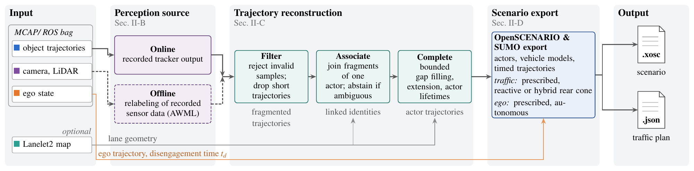
1. The observed scene
Start from the ego pose and object trajectories in a ROS bag. The online tracker provides what the driving stack perceived; offline perception labels can be used as an optional source.
2. Continuous trajectories
Association identifies fragments of the same vehicle. Completion fits motion across their gap using observations on both sides, while filtering removes invalid samples and short fragments. See how different methods fill a gap.
3. Late handover and reactive traffic
The ego follows its recorded path until shortly before the disengagement, keeping the encounter close to the recording. At handover, the stack controls the ego and vehicles in the rear cone (90° opening, 100 m range) become reactive. Other traffic follows its reconstructed trajectories.
4. Closed-loop behavior
The driving stack perceives the reconstructed scene through simulated sensors and controls the ego in CARLA/SUMO. A reproduced encounter can be rerun with an updated stack to test whether its response changes.
Following traffic when the ego changes its behavior
In D2, the original stack waits behind a partly blocking truck. The updated stack passes it. The two following vehicles must now respond to an ego maneuver that was absent from the recording.
Hybrid traffic: speed, position and acceleration
At the recorded takeover: real ego 0.00 m/s; simulated ego 1.95 m/s. The simulated ego is 3.6 m ahead of the recorded ego along its path.
━━ real recording ━━ simulation Dashed lines: handover and recorded takeover
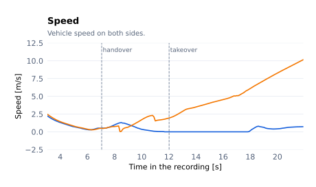
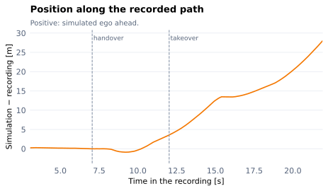
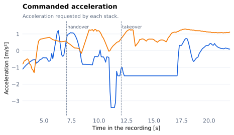
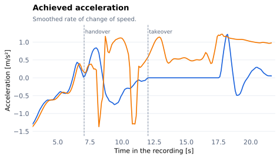
Log replay: speed, position and acceleration
At the recorded takeover: real ego 0.00 m/s; simulated ego 0.03 m/s. The simulated ego is 0.2 m behind the recorded ego along its path.
━━ real recording ━━ simulation Dashed lines: handover and recorded takeover
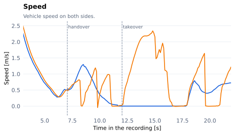
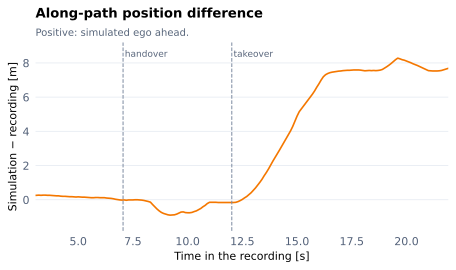
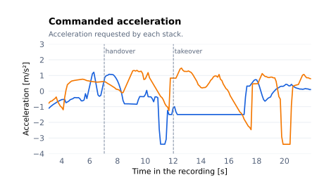
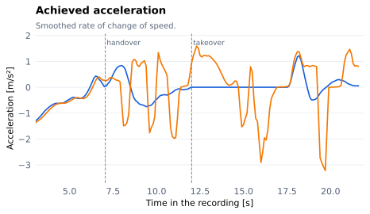
Under log replay, surrounding vehicles keep their recorded motion even when the ego changes course. The hybrid policy lets the following vehicles brake and follow while preserving the trajectories of traffic outside the rear cone.
Evaluation results
Three Town10 drives provide known vehicle identities and positions for measuring reconstruction accuracy. Nine real urban disengagements test whether the reconstructed encounters reproduce the driving stack’s behavior.
- 5 of 9recorded disengagements reproduced in closed loop
- 63 / 111benchmark gaps rejoined, with no wrong link in the evaluated vehicle pool
- 4–7 mmmedian simulator error relative to reconstructed motion during replay (vehicles: 4 mm; ego: 7 mm)
- 0.8 mmean traffic deviation at disengagement under the hybrid policy, against 5.6 m with all traffic reactive from the start
Reconstruction of fragmented trajectories
Association and completion answer different questions: which fragments belong to one vehicle, and how that vehicle moved while unobserved. Both tests use 111 natural tracker gaps, including 56 in moving-vehicle trajectories. ↑ means higher is better; ↓ means lower is better.
Motion near a gap can be unreliable. A tracker may still be stabilizing a newly detected vehicle’s state, or may continue extrapolating after detections stop. The uniform baseline uses the same observation-noise rule throughout each fragment. Our end-aware model adds higher position uncertainty near the fragment’s beginning and end, giving those observations less influence on the fitted motion.
1. Association: which fragments belong together?
Nearby endpoints can belong to different vehicles. Our association checks motion compatibility and rejects ambiguous links; the proximity baseline links endpoints within a time and distance gate.
| Method | Rejoined all ↑ | Rejoined moving ↑ | Wrong links ↓ |
|---|---|---|---|
| Zhu-inspired, 2 s / 5 m | 58 | 17 | 2 |
| Zhu-inspired, 5 s / 5 m | 62 | 15 | 8 |
| Zhu-inspired, 2 s / 10 m | 76 | 34 | 9 |
| Zhu-inspired, 5 s / 10 m | 77 | 29 | 19 |
| Ours | 63 | 33 | 0 |
Gates specify maximum time gap / endpoint distance. Wider gates recover more gaps but also create more wrong links. “Rejoined” counts benchmark pairs in the same trajectory; that trajectory can contain another incorrect link. Wrong links are counted across the full candidate pool.
2. Completion: how well is the motion recovered?
Every method receives the correct fragment pairs. We measure position error inside the missing interval, so the comparison isolates completion accuracy from association decisions.
| Method | RMSE [m] all ↓ | RMSE [m] moving ↓ |
|---|---|---|
| Constant velocity | 1.00 | 1.16 |
| Hermite | 1.21 | 1.23 |
| Zhu-inspired | 1.17 | 1.25 |
| Uniform weighting (baseline) | 0.93 | 1.02 |
| End-aware weighting (ours) | 0.88 | 0.96 |
The two weighting variants use the same motion fit and observations. In this benchmark, adding end-aware uncertainty reduces XY root-mean-square error (RMSE) from 0.93 to 0.88 m overall and from 1.02 to 0.96 m for moving vehicles. All 111 candidate completions are scored, including those rejected by the motion checks.
Reactive traffic and handover
Making traffic reactive too early changes the encounter before the ego can respond. To measure this drift separately from ego behavior, we keep the ego on its recorded path and compare four traffic policies.

Disengagement reproduction
An event is reproduced when the simulated stack shows the behavior that preceded the human takeover in the recording. The assessment considers stopping, speed, acceleration, gaps to relevant vehicles and planner logs. Position error alone does not determine the outcome: the ego can reach the same behavioral situation at a different time.
Reconstruction and execution measurements
With the handover 5 s before the disengagement, reconstruction moves the recorded samples by a median of 0.06 m up to the handover, execution adds 4 mm for the vehicles and 7 mm for the ego, and 98.5 % of the expected vehicle samples are present. The simulated tracker observes 87.6 % of the vehicles observed by the real tracker. At the disengagement, the simulated ego differs from the recorded one by a median of 1.0 m along its path, 0.06 m laterally and 0.8 m/s in speed. Creating a scenario takes 0.5–3.5 min per recording on a desktop CPU, for scenes with 74–248 actors.
| ID | Situation | Cone | Cov. ↑ | ≤ 2 m ↑ | ed ↓ | Outcome |
|---|---|---|---|---|---|---|
| D1 | truck blocks lane | 6 | 100.0 | 90.8 | 0.41 | reproduced |
| D2 | truck partly blocks lane | 4 | 98.5 | 68.8 | 0.63 | reproduced |
| D3 | protruding parking car | 10 | 100.0 | 73.4 | 4.11 | reproduced |
| D4 | reversing car, parked coach | 18 | 91.2 | 64.7 | 9.86 | diverged |
| D5 | close pass of parked car | 1 | 100.0 | 97.6 | 11.20 | diverged |
| D6 | pedestrians at right turn | 1 | 95.9 | 77.9 | 0.02 | reproduced |
| D7 | lane change beside a car | 10 | 98.7 | 82.6 | 2.04 | diverged |
| D8 | taxi about to reverse | 0 | 97.5 | 97.5 | 1.03 | diverged |
| D9 | cyclist, pedestrians at crosswalk | 2 | 83.9 | 80.1 | 0.22 | reproduced |
Re-simulation of nine recorded disengagements (paper, Table III). Cone is the number of reactive rear-cone vehicles. Cov. and ≤ 2 m are the shares [%] of expected vehicle samples present before th and within 2 m of the reconstruction from th to td + 5 s. ed is the ego position error at td [m]. D4, D7 and D8 diverge despite an accurately reproduced scene; D5 has a scene-geometry mismatch.
Inspect more cases: six simulated cameras and BEV
The stack under test stops behind the blocking truck (D1), waits behind the partly blocking truck (D2), approaches the protruding car without a sustained stop (D3), holds for the pedestrians at the right turn (D6), and stops before a crosswalk for a crossing cyclist and two pedestrians (D9). The measured errors and stack logs indicate the likely causes of divergence. In D4 (closed-loop behavior), the simulated stack brakes at the recorded time but slows more and stays farther from the reversing van. In D5 (scene geometry), the simulated stack perceives angled parked cars farther from its path than the real stack did, because no vehicle model matches the detected box, and passes 2.7 s earlier. In D7 (localization), the real stack likely had a 0.5–0.6 m localization offset that the simulated ego does not have. In D8 (closed-loop behavior), the simulated stack remains stopped for the taxi while the real stack creeps and is about to accelerate again, so the takeover situation does not arise.
Inspect each encounter through six simulated cameras and a synchronized bird’s-eye view. Green R marks vehicles that react to the ego. The plots compare recorded and simulated speed, position and acceleration.
D3 · Protruding parked car
At the recorded takeover: real ego 2.52 m/s; simulated ego 2.51 m/s. The simulated ego is 3.0 m behind the recorded ego along its path.
━━ real recording ━━ simulation Dashed lines: handover and recorded takeover
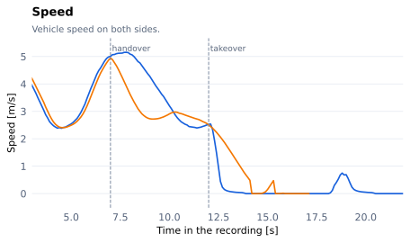
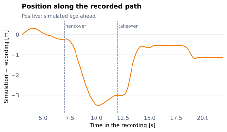
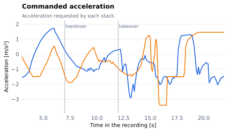
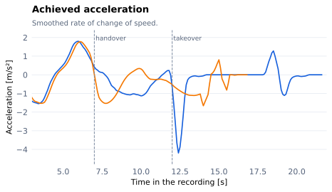
D6 · Pedestrians at a right turn
At the recorded takeover: real ego 0.00 m/s; simulated ego 0.01 m/s. The simulated ego is 0.0 m ahead of the recorded ego along its path.
━━ real recording ━━ simulation Dashed lines: handover and recorded takeover
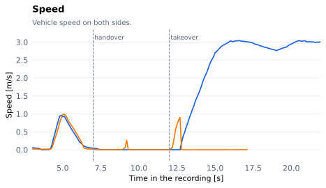
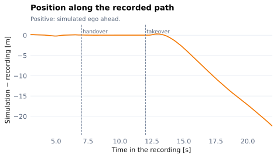
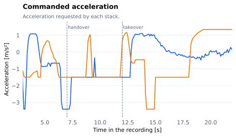
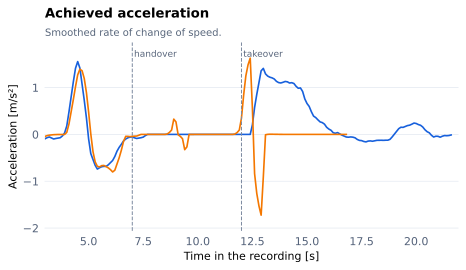
D7 · Close approach during pull-away
At the recorded takeover: real ego 3.92 m/s; simulated ego 3.13 m/s. The simulated ego is 2.0 m behind the recorded ego along its path.
━━ real recording ━━ simulation Dashed lines: handover and recorded takeover
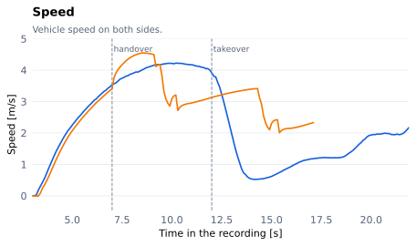
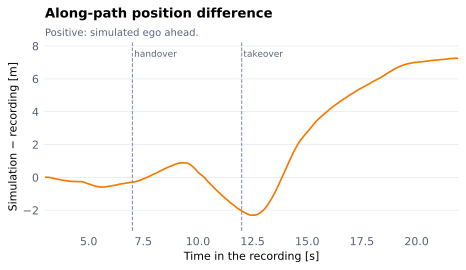
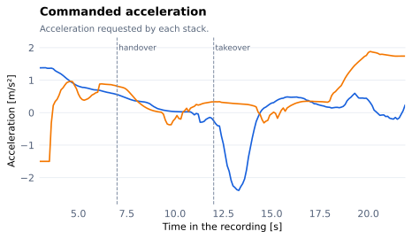
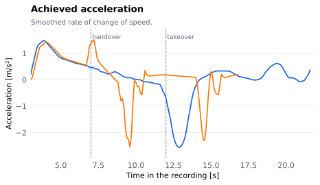
D8 · Taxi about to reverse
At the recorded takeover: real ego 1.10 m/s; simulated ego 0.00 m/s. The simulated ego is 1.0 m behind the recorded ego along its path.
━━ real recording ━━ simulation Dashed lines: handover and recorded takeover
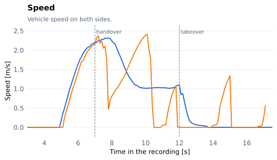
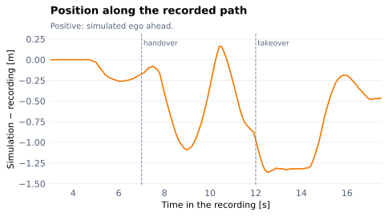
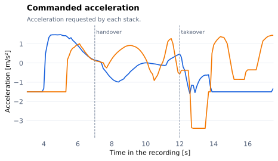
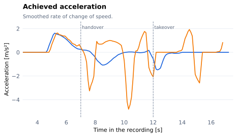
Motion inside a trajectory gap
A gap contains no observations of the vehicle. Its motion must be inferred from the fragments on either side. Completion also extends trajectory ends within limits so vehicles can enter and leave sensor range gradually.
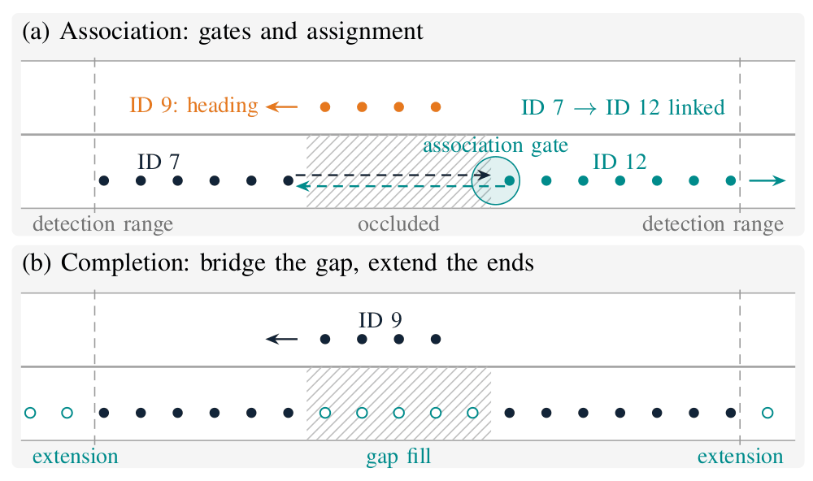
In D7, a car pulling away disappears from the tracker output for 3.1 seconds and returns with a new ID. Constant velocity connects the endpoint positions at a fixed speed; Hermite interpolation also uses endpoint velocities. Our method smooths the observed fragments forward and backward in time, then uses the resulting boundary positions and velocities to fill the gap. End-aware uncertainty reduces the influence of unreliable endpoint observations on this fit. The explorer compares these curves with a Zhu-inspired completion.
Inspect a gap
Choose a gap from the gallery to inspect its observed fragments and completion methods.
Heading is the direction of motion relative to the line between the gap endpoints. Below 0.5 m/s it is hidden because small position changes give an unstable direction.
● ○ observed fragments ━━ simulator ground truth (benchmark only) ▧ interval without tracker observations
Browse all 111 benchmark gaps and four real examples
Thumbnails: blue observations, green reconstruction, grey simulator ground truth.

Where the benchmark gaps come from
Three 180 s Town10 drives use 40 traffic vehicles each (seeds 101, 202 and 303). Simulator ground truth identifies vehicles across natural tracker losses and supplies the missing motion for the completion scores. The first 5 s are excluded.
Why sometimes leave two fragments unjoined?
When competing associations are similarly plausible, the method leaves the fragments separate. This avoids forcing an identity decision from ambiguous observations.
Which observations exist at the same time?
Each colored row below is an observed fragment from the same example. Time zero is the end of source 1a5f. The bars show up to three seconds of observations adjacent to each candidate gap; the links remain hypotheses.
Dots show observations; the larger marker follows the selected time within each observed fragment. No motion is invented between fragments. Candidate durations: 0.45 s (1a5f → 99b9), 1.53 s (1a5f → 2659), 1.98 s (3847 → 99b9), and 4.77 s (e51f → 99b9).
Reconstruction settings behind the real-gap examples
These settings govern the real-gap examples. Association gates limit possible identity links; motion checks reject implausible completed trajectories.
| Stage | Setting |
|---|---|
| Trajectory splitting | Observation-gap threshold 0.35 s; jump-speed threshold 50 m/s. |
| Association window | Maximum gap 5 s; endpoint velocity window 1 s; speed gate 45 m/s; travel-heading gate 100° when both endpoints move above 0.5 m/s; dimension ratio at most 1.8. |
| Assignment ambiguity | Unmatched cost 4; retain a link only when forbidding it increases the global assignment cost by more than 1. |
| Boundary estimation | Forward/backward constant-acceleration smoothing; position-noise floor 0.3 m; jerk process-noise variance parameter 2; 5 Hz reconstruction grid. |
| Trajectory-end weighting | Position standard deviation is multiplied by up to 1.5 in the first second and up to 3 in the final 1.5 s of a fragment; the larger factor applies where the intervals overlap. |
| Completion checks | Cubic Hermite motion; limits of 60 m/s speed, 8 m/s² acceleration/braking and 6 m/s² lateral acceleration; validation step 0.02 s. |
| Extension and fallback | Extend by at most 10 m and 2 s. Use lane support relative to the observed fragments; retain observed motion when a joint fit fails. |
Map alignment and vehicle response
The simulated road and reconstructed trajectories must share a coordinate frame. Vehicle response also matters: once the stack takes control, differences in acceleration or steering can change the timing and clearance of the encounter.
Road geometry and ego trajectories
The map overlays show where recorded and simulated ego paths lie relative to the lane geometry over the full encounter.
━━ Lanelet2 boundaries ┄ CARLA lane centers ━━ recorded ego ━━ simulated ego
Grey lines are lane boundaries; purple lines are lane centers, so they are expected to be offset. The ego paths show how the recording and simulation align with that geometry.
From vehicle commands to motion
An empty-road drive isolates ego motion from traffic interactions. The plots relate the stack’s commands to the simulated vehicle’s response and its deviation from the recorded path. Time zero marks handover to the stack.

The replay portion stays within 1.2 cm of the recorded ego path in this window. Under stack control, deviation reaches 1.0 m after 5 s and 1.8 m after 10 s; at 5 s the simulated ego is about 0.2 m/s slower. This growing deviation motivates a late handover: the stack needs time to respond, while the encounter should remain close to its recorded state.
Reading the command plots
Time zero marks the handover from recorded motion to stack control. Before it, the stack produces commands while the ego follows the recording. After it, the vehicle responds to those commands. Position deviation is measured against the recorded ego path.
Scope and reproducibility
- What can be re-simulated. The five reproduced events are planning-related: an object in the recorded scene determines the behavior of the stack. Events caused by perception or localization errors are outside the scope of a re-simulation from object trajectories, because the simulated stack perceives the reconstructed objects anew and localizes without the real error.
- Small margins after the handover. The diverged events were decided by clearances of 0.1–0.4 m and by timing within a second, which the pipeline does not preserve after the handover.
- Tracker artifacts and vehicle models. Partly visible vehicles can have shifting boxes and changing dimensions, making standing and moving vehicles difficult to distinguish. Spawned vehicle models differ from the recorded vehicles; in D4 the model is wider for 95 % of the vehicles. Tracker quality therefore limits the reconstructed scene.
- Dynamics at the switch. Released vehicles lose speed when they switch from prescribed to physical motion, and the simulated ego brakes harder than commanded (D3).
- Scene and validity. Unobserved actors are absent, and traffic-signal states are not reconstructed; signals are reported as green. Reconstruction is scored on simulated drives on one map, where traffic mostly cruises at one speed or stands. The nine disengagements are case studies.
Evaluation protocol
- Association and completion
- 111 scored natural tracker gaps, including 56 moving and 55 nearly stationary cases. Association counts recovered pairs and incorrect links. Completion is scored with the correct pairs supplied, pooling squared XY error over 3,296 ground-truth timestamps.
- Reference methods
- The Zhu-inspired baseline is our implementation of proximity linking and trajectory completion. For the benchmark it uses lane interpolation where possible and Cartesian Hermite interpolation otherwise; the real-gap illustrations use Cartesian completion. Real gaps have no ground truth inside the missing interval.
- Interpreting the errors
- Completion error compares the estimated missing motion with simulator ground truth. Replay execution error compares simulated motion with the reconstructed trajectories; it does not measure reconstruction accuracy relative to the real world.
- Video examples
- The D1 video uses an ambulance model for the blocking vehicle. Its accompanying motion plots describe that run; the event table retains the evaluated runs. D2 shows the updated stack under both traffic policies.
- Execution and behavior
- CARLA 0.9.16, SUMO 1.27.1 and the adapted Autoware Universe stack. Reconstruction and execution errors are measured separately. Event-wise behavioral judgments use stop position, speed, acceleration, vehicle gaps and planner logs.
Main pipeline code release is planned upon acceptance.
BibTeX
@misc{rosbag2scenario,
title = {Rosbag2Scenario: From Real-World Disengagements
to Replayable Scenarios},
author = {Anonymous Authors},
year = {2026},
note = {Under double-blind review}
}